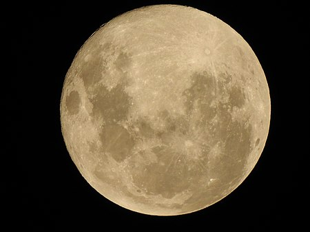

La Lluna és l'únic satèl·lit natural de la Terra, juntament amb la qual forma el sistema satel·litari Terra-Lluna. Té aproximadament una quarta part del diàmetre de la Terra, magnitud comparable a l'amplada del continent australià. És el cinquè satèl·lit més gros del sistema solar, amb una mida que supera la de qualsevol planeta nan conegut, així com el satèl·lit més gros (i massiu) en proporció al seu planeta.

La Lluna té un nucli intern sòlid ric en ferro, d'un radi d'uns 160 quilòmetres i un nucli extern compost principalment de ferro líquid d'aproximadament 350 quilòmetres de radi. Al voltant del nucli, hi ha una capa límit parcialment fosa d'un radi d'uns 587 quilòmetres.
La Lluna és el segon satèl·lit més dens del sistema solar després de Io. No obstant això, el nucli interior de la Lluna és petit, d'un radi d'uns 160 km o menys; això és només un 10% del radi de la Lluna. La seva composició no està ben delimitada, però és probable que sigui de ferro metàl·lic aliat amb una petita quantitat de sofre i níquel.
Informació extreta de la Viquipèdia.